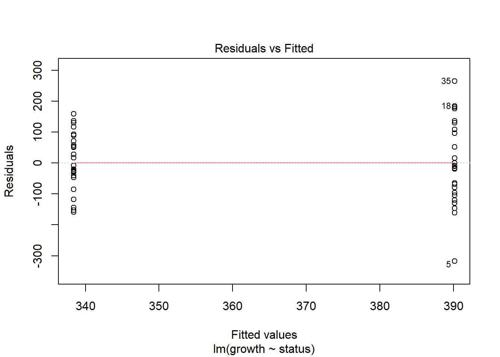

data<-rnorm(10000, mean = 5.5, sd=0.75) #your population, 10,000 individuals total
mu<-mean(data) #real population parameter
sigma<-sd(data)2 Exploring the CLT
The applet on Ward and Nolte’s book (Ward and Nolte 2024) is a great example of the central limit theorem. If you still have questions about this topic I recommend you check the applet on section 6.3 and the one on section 7.2.
We are going to do a little experiment regarding the Central Limit Theorem and confidence intervals. We are going to:
- Simulate a population. This population can be anything, and can have any distribution.
- Take a sample of size n = 30
- Estimate the mean, and CI of the sample
- Compare it to the population. Did we get it right? Is the real mean encompassed in the population?
- Do it again… and again… and again
- Do it 1000 times
- Plot this using ggplot
This may seem like a lot… but it is not! It can be done fairly easily using R. And at this point I will still guide you step by step.
If you feel like you are falling behind
I cannot stress this enough. If you feel like you are falling behind, I can meet you MWF before or after class, or you can meet with me in my office to go over coding, any topic, or any issues you may be having.
Let start
2.0.0.1 Step 1: Simulate your data
This may be the most complicated step. We haven’t really talked about distributions, and you’re not expected to know this at this point. If you are not comfortable simulating your own data, I am providing some examples below. Choose the one you like the most, and use it to simulate your data. If you decide to use one of the provided examples, then you can skip this, and go directly to the Section 2.0.0.2 section. If you want to simulate your own population, look at the examples.
Warning
Be careful! This data is simulated, so each time you run the code it will generate a new set of data. Make sure to simulate your population only once!
If you want to simulate the example, let’s do the following:
Decide what system you are trying to simulate
Create an object called “data” in which you will simulate 10,000 datapoints generating 10,000 random deviate using the distribution of your choice
Obtain the population parameters (mean and sd). Call them mu and sd.
2.0.0.2 Examples
I have different examples. In order to simulate the data, simply run the example that you want. Only run one example (the one you want) or they will overwrite themselves. These have different distributions
Please be aware that I am not super knowledgeable about these systems, so the units may be completely off. I tried my best though!
2.0.0.2.1 Example 1: bats ü¶á
This data-set is on the wing aspect ratio of the pygmy round-eared bat.
2.0.0.2.2 Example 2: frogs üê∏
This data-set is on the presence-absence data of Chytridiomycosis in a population of Lithobates clamitansThis is a binomial distribution. 1 is presence and 0 is absence
data<-rbinom(1000,1,0.23) #your population, 10,000 individuals tota.
mu<-mean(data) #real population parameter
sigma<-sd(data)2.0.0.2.3 Example 3: grapes üçá
This dataset is on the number of wild grapes in 10,000 vines in a meadow (you can also make this wine grapes in a vineyard if you are into that).
data<-rpois(1000,40) #your population, 10,000 individuals total.
mu<-mean(data) #real population parameter
sigma<-sd(data)2.0.0.2.4 Example 4: Beef üêÆ
Annual live weight (LW) meat production in 10,000 hectares (n = 10,000), each hectare represents one datapoint.
data<-rnorm(10000, mean = 410.5, sd=60) #your population, 10,000 individuals total
mu<-mean(data) #real population parameter
sigma<-sd(data)
✏️ Question 1 ✏️
Come up with some potential systems/examples that I can simulate or use for future students. Coming up with examples is probably the most challenging aspect of teaching this course! You don’t have to come up with actual numbers. Just ideas!
2.0.0.3 Step 2: Take a sample
Before taking a sample, write down or make a mental note of the real population mean:
mu[1] 410.6705We are going to simulate taking a sample of size 40. It is actually pretty straightforward to take a sample:
n<-40
sample1<-sample(data,n)
sample1_mean<-mean(sample1)
s<-sd(sample1)Now, let’s calculate the standard error. Remember, SE is:
\[ SE = \frac{s}{\sqrt{n}} \]
Complete the code to estimate SE:
SE1<-s/sqrt(n)If you remember the class, we said that usually to estimate confidence intervals we use the following equation:
\[ LowerCI = \overline{y} - 1.96SE \] \[ UpperCI = \overline{y} + 1.96SE \]
But why? Look at the following plot:
So, our confidence interval is called a 95% confidence interval, and has an \(\alpha = 0.05\) (think of this as a 5% chance of the parameter not included within the confidence interval). We can actually use any CI value we want, but 95% is usually used. It is OK to use a critical value of 2 or one of 1.96
We can also estimate the critical values for any alpha we want. For this, we use the following code:
qnorm(0.025) #for lower CI[1] -1.959964qnorm(0.975) #for highert CI[1] 1.9599642.0.0.3.1 Assignment question 2:
✏️ Question 2 ✏️
See the last code chunk, and answer: Why do we use 0.025 and 0.975 instead of 0.95? If you can‚Äôt figure it out, that‚Äôs ok, but we should meet at some point so I can explain it üòÉ.
We can also use the critical value (in this case \(\alpha=0.05\)) to find our critical values with the following function:
alpha<-0.05
qnorm(alpha/2)[1] -1.959964qnorm(1-alpha/2)[1] 1.959964Try a different critical value.
Also, while I am estimating the critical values for both lower and upper CI’s, you only need to do one because they are symmetric. We also will very rarely use the normal distribution and will be using a different distribution called “t distribution”, and can estimate the critical values using qt(). But for now, lets stick to the normal distribution.
Ok, let’s go back to our sample:
We can estimate the CI’s now, and check whether the real parameter mean is included within them. Remember, you estimated the real mean and named it mu:
2.0.0.3.2
The following code is used to estimate confidence intervals.
UCI1<-sample1_mean+1.96*SE1
LCI1<-sample1_mean-1.96*SE1And you can use the following code to check whether the real mean (mu) is included within the confidence intervals you estimated!
if(mu<UCI1 & mu> LCI1){
print(paste0("Nice! The real parameter ", mu, " is included within the confidence interval. LCI: ", LCI1," UCI: ", UCI1))
} else {print(paste0("Bummer! The real parameter ", mu, " is NOT included within the confidence interval. LCI: ", LCI1," UCI: ", UCI1))}[1] "Nice! The real parameter 410.67049461394 is included within the confidence interval. LCI: 389.690411983434 UCI: 422.342273250069"In class I mentioned examples in which I would sample the same population multiple times. Let’s do that, let’s start by taking a second sample and estimating the confidence interval:
sample2<-sample(data,n)
sample2_mean<-mean(sample2)
s2<-sd(sample2)
SE2<-s2/sqrt(n)
UCI2<-sample2_mean+1.96*SE2
LCI2<-sample2_mean-1.96*SE2
if(mu<UCI2 & mu> LCI2){
print(paste0("Nice! The real parameter ", mu, " is included within the confidence interval. LCI: ", LCI2," UCI: ", UCI2))
} else {print(paste0("Bummer! The real parameter ", mu, " is NOT included within the confidence interval. LCI: ", LCI2," UCI: ", UCI2))}[1] "Nice! The real parameter 410.67049461394 is included within the confidence interval. LCI: 403.435478311054 UCI: 431.68000285804"Run the code again for sample 3
Now, I want you to do this 100 times (take a sample, estimate the CI, check if the real mean is included). This is just like in the applet from the book you read this week..
This might seem like a lot of work, but we can use a thing called for loops. Keep reading! üòÉ
A for loop allows us to iterate over a sequence. For example:
for (x in 1:5){
print(x*2)
}[1] 2
[1] 4
[1] 6
[1] 8
[1] 10Some important aspects of that last for loop:
\[ \underbrace{for}_{initiate\; loop}\underbrace{(x\; in\; 1:5)}_{vector} \underbrace{print(x*2)}_{code\; block} \]
- You start the for loop using
for - You give a vector of values. During the
forloop, x will take the first value in the vector and run the code block. After this, x will take the second value and run the code block. It will continue doing this until it reaches the last value. This is the “last iteration”. After the last iteration, it will exit the for loop.
Let’s use a for loop to take100 samples.
First, let’s create some empty vectors to store our results. I like to create vectors before running the for loop because it is computationally faster than concatenating results as the loop goes. We will create vectors of size 100:
experiment<-1:100
means<-rep(NA,100) #For the means
s<-rep(NA,100) #sd
SE<-rep(NA,100) #SE
LCI<-rep(NA,100) # Lower CI
UCI<-rep(NA,100) # Upper CI
inclusive<-rep(NA,100) #is the real parameter included?
alpha<-0.05 #our alpha
lower<-qnorm(alpha/2) #lower critical value
upper<-qnorm(1-alpha/2) #upper critical valueWe can now run the code:
for(i in 1:100){
sample<-sample(data,n)
means[i]<-mean(sample)
s[i]<-sd(sample)
SE[i]<-s[i]/sqrt(n)
LCI[i]<-means[i]+SE[i]*lower
UCI[i]<-means[i]+SE[i]*upper
if(mu<UCI[i] & mu> LCI[i]){
inclusive[i]<-T} else{
inclusive[i]<-F
}
}That is pretty cool. You can run for loops with thousands of iterations and it will run in seconds!
We would expect that about 95 of our runs had the real parameter included within the estimated CI’s. There is a super easy way to estimate this:
sum(inclusive)[1] 96That’s it! It will give you the number of “successes”.
At the end of the document, I have mroe information on for loops, and a “challenge” if you want to create one.
Let’s create a dataframe in which we store all of these results.
df<-data.frame(experiment,means,s,SE,LCI,UCI,inclusive)Now, let’s plot it. We will use ggplot. ggplot is a package, and packages need to be installed before you are able to use them. Similar to computer software, you only need to install a package once in a computer. Let’s install ggplot (if you already have ggplot installed, you can skip this step
install.packages("ggplot2")After you have installed a package, you need to load it before using it using the library command. Again, think of this as any software in your laptop. After you install it, you need to open the program before you run it:
library(ggplot2)Warning: package 'ggplot2' was built under R version 4.3.3This is how ggplot works:
\[\underbrace{ggplot}_{initiate\; plot}(\underbrace{data = df}_{data\;frame},\; \underbrace{aes(x =\; , y = \;)}_{plot\; attributes}) + \underbrace{geom\_line()}_{geometry\:line} + \underbrace{geom\_point()}_{geometry\:point} + \underbrace{theme()}_{customize}\]
In that example we have two geometries: lines and points. So, in that case we would be plotting lines and points (easy, right?). If you want to see all the available geometries, visit: https://ggplot2.tidyverse.org/reference#geoms
We will use ggplot to plot all of the points:
ggplot(df, aes(x = experiment, y = means,colour=inclusive)) +
geom_point() +
geom_hline(yintercept = mu, color = "black", linetype = "longdash") +
scale_y_continuous(name = "", limits = c(min(df$LCI) - min(df$LCI)/10 , max(df$UCI + max(df$UCI)/10))) +
scale_x_continuous(limits = c(0, 100)) +
theme_classic()Three things you may be thinking about this plot:
- Plotting it seems harder than I made it seem! There are more lines there
- It’s a lot of code, and I’m not sure how good it looks
- It’s missing the confidence intervals!
I agree with all of that. However, as class goes by I hope you will understand all the sections of the plot and make nicer plots than this!
For the time being, let’s inspect each element:
ggplot(df, aes(x = experiment, y = means,colour=inclusive))initiate the plot, provides the data, and provides values for x, y, and for the colorgeom_pointdraws the geometry (point) with our provided elementsgeom_hlineis drawing a horizontal line. We need to provide an actual value (mu in this case). Therefore it represents the real parameterscale_y_continuousandscale_x_continuousprovide information for the axes. You won’t use this 99% of the time, and no need to worry about it right now. In this case I created y axis to be able to easily add the confidence intervlas in one of the following steps.theme_classicis providing a theme. Try running it without a pre-defined theme. I don’t like the ggplot standard theme
Finally, please notice how we add elements using +.
Now, I don’t like the colors of the dots. I am going to change them:
ggplot(df, aes(x = experiment, y = means,colour=inclusive)) +
geom_point() +
geom_hline(yintercept = mu, color = "black", linetype = "longdash") +
scale_y_continuous(name = "", limits = c(min(df$LCI) - min(df$LCI)/10 , max(df$UCI + max(df$UCI)/10))) +
scale_x_continuous(limits = c(0, 100)) +
theme_classic()+
scale_color_manual(values=c("#ec280e", "#06b512"))I like those colors better. There are many ways to choose colors, but I like giving R the HEX code of the color I want. I usually use a color picker: https://htmlcolorcodes.com/color-picker/ to pick the color, and that supplies me with the HEX code.
✏️Question 3 ✏️
Change the plot colors
Finally, I want to add the CI’s:
ggplot(df, aes(x = experiment, y = means,colour=inclusive,ymin = LCI, ymax=UCI)) +
geom_point() +
geom_hline(yintercept = mu, color = "black", linetype = "longdash") +
scale_y_continuous(name = "", limits = c(min(df$LCI) - min(df$LCI)/10 , max(df$UCI + max(df$UCI)/10))) +
scale_x_continuous(limits = c(0, 100)) +
theme_classic()+
scale_color_manual(values=c("#ec280e", "#06b512"))+
geom_errorbar(width = 0)Notice how I added ymin and ymax to aes()? I am providing more plot attributes. I also added geom_errorbar(width = 0).
3 One sample T-test
Finally! We will work on a one-sample t-test.
Example: The Jackson Laboratory (Bar Harbor, ME) shipped you some lab mice üêÅ from the C57BL/6J strain. You chose this specific strain because their mean mass at 21 weeks is 20.2 grams, which is important for your experiments. However, you suspect your mice set might have a different weight, so, you take a random sample of 21 individuals to check.
Download the “mousedata.csv” file and load it in an object named mousedata and inspect it
mousedata<-read.csv("data/mousedata.csv")
mousedata<-mousedata$x
mousedata [1] 18.41489 17.96535 20.23447 16.91896 19.21828 25.28136 17.35877 18.97449
[9] 21.58163 16.26229 18.40497 20.59939 19.41167 20.00668 18.53189 17.06733
[17] 19.18580 22.53532 21.62798 20.19551 19.47198Let’s plot the data:
df1<-data.frame(mousedata,mouse="mouse")
ggplot(data=df1,aes(x=mouse,y=mousedata))+
geom_boxplot(fill=gray(0.7,0.2),color="black")+
geom_point(size=2,col=gray(0.5,0.5))+
theme_bw() + theme(panel.border = element_blank(), panel.grid.major = element_blank(),
panel.grid.minor = element_blank(), axis.line = element_line(colour = "black"))+
ylab("mass (g)")+
xlab("mouse pop")Not a very good looking plot. And we are not comparing groups, so, a bit pointless. But you will be plotting the next example. It also brings an important issue:
Boxplot is probably the most commonly used chart type to compare distribution of several groups. However, you should keep in mind that in a boxplot data distribution is hidden behind each box. For instance, a normal distribution could look exactly the same as a bimodal distribution. Please consider a violin plot or a ridgline chart instead. For reference, here is how to do a violin plot:
df1<-data.frame(mousedata,mouse="mouse")
ggplot(data=df1,aes(x=mouse,y=mousedata))+
geom_violin(fill=gray(0.7,0.2),color="black")+
geom_boxplot(fill=gray(0.7,0.2),color="black",width=0.1)+
geom_point(size=2,col=gray(0.5,0.5))+
theme_bw() + theme(panel.border = element_blank(), panel.grid.major = element_blank(),
panel.grid.minor = element_blank(), axis.line = element_line(colour = "black"))+
ylab("mass (g)")+
xlab("mouse pop")After plotting, the question is: is the average mass of your mice equal to 20.2 grams?
You are not measuring all the individuals, only 21
The relevant hypotheses would be:
\[ Ho : \mu_1 = 20.2 \]
\[ Ha : \mu_1 \neq 20.2\]
Hopefully you understand this based on the readings, and some previous stats classes. If it’s not clear, talk to me.
We will be doing a t-test. In a t-test we are essentially estimating the probability of observing a result as (or more) extreme as what we observed given that Ho was true. Essentially, if the actual mean of your mice is 65-g, what are the chances ob obtaining the sample you did. The further your sample mean is 65, the lower the chances of observing that result.
We will also estimate a “critical value” that corresponds to an \(\alpha\) of 0.05. While now we can estimate p directly with r, you may remember your stats courses where you were tasked with finding a critical value, in order to decide whether to reject or fail to reject the null hypothesis.
We cannot use 1.96 because our sample is small (and we are doing a t-test). Therefore, estimating a critical value from t distribution is better.
We will use the following code to obtain our critical value:
alpha<-0.05
qt(c(alpha/2, 1-alpha/2), df=21-1)[1] -2.085963 2.085963Our degrees of freedom are n-1. And our critical values are -2.08 and 2.08. Any value lower than -2.08 or higher than 2.08 will be significant (i.e., we reject the null hypothesis)
ü߆Think about it ü߆
Why are degrees of freedom n-1?
Essentially, our critical values show the following:
This is the t-distribution for our example.
If you are curious as to what happens to the t distribution as df goes up, try calculatin it for 10,000 df. It actually becomes 1.96 and is no different than a normal distribution.
Now, let’s solve our problem. Remember, our linear model looks like:
\[ y_i = \beta_0 + \epsilon_i \ \ \ \ \ \text{where} \ \ \ \ \ \epsilon_i \sim \text{N}(0,\sigma) \]
3.0.1 Linear model
Running this dataset as a linear model is very straightforward. I talked about this in class.
model1<-lm(mousedata~1)
summary(model1)
Call:
lm(formula = mousedata ~ 1)
Residuals:
Min 1Q Median 3Q Max
-3.2258 -1.0831 -0.2698 0.7464 5.7933
Coefficients:
Estimate Std. Error t value Pr(>|t|)
(Intercept) 19.4880 0.4571 42.63 <2e-16 ***
---
Signif. codes: 0 '***' 0.001 '**' 0.01 '*' 0.05 '.' 0.1 ' ' 1
Residual standard error: 2.095 on 20 degrees of freedom
Question 4 ✏️
Interpret the results. What is the estimated mean? What are the confidence intervals? Do you think this population is significanlty different from 20.2?
You can also run a linear model like this:
model1alternative<-lm(mousedata-20.2~1)
summary(model1alternative)
Call:
lm(formula = mousedata - 20.2 ~ 1)
Residuals:
Min 1Q Median 3Q Max
-3.2258 -1.0831 -0.2698 0.7464 5.7933
Coefficients:
Estimate Std. Error t value Pr(>|t|)
(Intercept) -0.7120 0.4571 -1.557 0.135
Residual standard error: 2.095 on 20 degrees of freedomWhat is different in this case?
In this case, we can actually interpret the intercept. Try to include an interpretation of the intercept estimate and P-value as part of question 4.
If you run the test using this alternative way, the t value of the intercept actually corresponds to the t value of a t-test. Essentially, r is running a t-test. Hopefully, this is the way you will be running t-tests in the future. In this case -5.33 is lower than the critical value. What does that mean?
3.0.2 Traditional way
We can also estimate the actual t-statistic using an equation:
\[ t = \frac{\bar{y} - \mu_0}{\frac{s}{\sqrt{n}}} \ \ \ \ \ \text{where} \ \ \ \ \ \frac{s}{\sqrt{n}} = \frac{\sqrt{\frac{1}{n-1}\sum^n_{i=1}(y_i - \bar{y})^2}}{\sqrt{n}} \]
Let’s do this. It looks super complicated, but R is doing all the heavy lifting.
1- Obtain the mean of the mouse mass
y_bar<-mean(mousedata)2- Obtain the standard error
se_y <- sd(mousedata)/sqrt(length(mousedata))3- Calculate t statistic
t_stat <- (y_bar - 21)/se_y
t_stat[1] -3.307546And that’s it!
This should be the same as the linear model. We can compare this to the critical value
alpha<-0.05
qt(c(alpha/2, 1-alpha/2), df=21-1)[1] -2.085963 2.085963and you are done. Again, the linear model function does the same :)
Now, we can also run a ttest using the t.test function
Note
I would recommend you use linear models rather than running t-tests.
t.test(mousedata,mu=20.2)
One Sample t-test
data: mousedata
t = -1.5575, df = 20, p-value = 0.135
alternative hypothesis: true mean is not equal to 20.2
95 percent confidence interval:
18.53451 20.44159
sample estimates:
mean of x
19.48805 Again, this result should be the same exact one.
4 Two sample T-test
For this example, we will only run a linear model using lm and a t-test using t.test.
First off, download the file named tunadata and save it in the same folder as your .qmd file:
tunadata<-read.csv("data/tunadata.csv")
head(tunadata) growth status
1 474.6 infected
2 313.4 infected
3 194.2 infected
4 442.3 healthy
5 72.4 healthy
6 406.0 healthyHere we have data of üêü. We have measured the ‚Äúgrowth‚Äù (total length) of the tuna, and recorded whether they are healthy, or they are infected by a parasite that you suspect affects growth.
Question 5 ✏️
What are the null and alternative hypotheses?
Now, let’s plot the data:
ggplot(data = tunadata, aes(x = status, y = growth)) +
geom_boxplot(fill=gray(0.7,0.25),color="black",width=0.1) +
geom_violin(fill=gray(0.9,0.1),color="black")+
theme_bw() + theme(panel.border = element_blank(), panel.grid.major = element_blank(),
panel.grid.minor = element_blank(), axis.line = element_line(colour = "black"))+
geom_point(aes(color = status), size = 5, alpha = 0.5)+
scale_color_manual(values=c("#57825a","#dd2e46"))Now, let’s run a linear model.
Remember, the equation is:
\[ y_i = \beta_0 + \beta_1x_{1,i} + \epsilon_i \ \ \ \ \ \text{where} \ \ \ \ \ \epsilon_i \sim \text{N}(0,\sigma) \]
You will use this equation:
model2<-lm(growth~status,data=tunadata)
summary(model2)
Call:
lm(formula = growth ~ status, data = tunadata)
Residuals:
Min 1Q Median 3Q Max
-317.76 -83.56 -9.86 91.37 264.44
Coefficients:
Estimate Std. Error t value Pr(>|t|)
(Intercept) 390.16 23.55 16.569 <2e-16 ***
statusinfected -51.76 33.30 -1.554 0.127
---
Signif. codes: 0 '***' 0.001 '**' 0.01 '*' 0.05 '.' 0.1 ' ' 1
Residual standard error: 117.7 on 48 degrees of freedom
Multiple R-squared: 0.04791, Adjusted R-squared: 0.02808
F-statistic: 2.416 on 1 and 48 DF, p-value: 0.12674.0.0.0.1 Assignment question 9:
Using this output, answer the following:
- Where there any differences? (we will discuss this on Wednesday)
- What is the estimated mean for infected individuals? Calculate it using only the coefficients!
We are not focusing yet on assumptions. But usually, we can check most of them by running:
plot(model2)

In this case they look good.
Finally, to run a 2-sample t-test we need to know whether the variance is equal. Do the following to test it:
yH <- tunadata$growth[tunadata$status== 'healthy']
yI <- tunadata$growth[tunadata$status== 'infected']var.test(yH,yI)
F test to compare two variances
data: yH and yI
F = 1.9821, num df = 24, denom df = 24, p-value = 0.1004
alternative hypothesis: true ratio of variances is not equal to 1
95 percent confidence interval:
0.8734287 4.4978255
sample estimates:
ratio of variances
1.982052 Are the variances equal? or not? Remember, usually a p value lower than 0.05 means difference.
Also, read the alternative hypotehsis: true ratio of variances is not equal to 1 check the 95% confidence interval, does it include 1?
Finally, let’s run the t-test. This code chunk is incomplete. You have to specify whether the variance is equal or not. Use the results from the variance test to make your decision.
t.test(growth ~ status, data = tunadata,
var.equal = , paired = FALSE,
alternative = )
✏️ Question 6 ✏️
- Download the teporingos2pops.csv file, run a linear model on it and plot a boxplot with points of different color. For fun, try to also have the boxplot be a different color. IT doesn’t have to look good, just explore and play with ggplot.
- Describe what a boxplot is. We will talk more about it during our “plotting and visualizing” classes, but if you don’t know what it is, this is a good time to research it and try to describe it
4.1 Supplementary information. For loops and a “challenge”
This is not a part of the assignment, but it is a useful guide. There is also a cool challengfe at the end if you want to attempt it.
For loops aren’t the only kind of loops. If you remember, the for loops looked like this (see this section on html or a fully rendered document):
There are other types of loops
For example, a while-loop is:
And a repeat loop is:
Some of the important functions to know.
foriterates over a sequencewhileexecutes a set of statement as long as a logical condition is truebreakstops the loop before it loops through all itemsnextskip to next iteration before terminating the code chunkif...elsemight also be good to know to set logical conditions
4.1.0.1 Challenge
You are going to flip a fair coin 10,000,000 times. However, if you get lucky and get 20 straight tails, you get to stop flipping a coin (and you get 10 extra credit points!) You need the record in which throw you got the 20th straight tail, and print it. If you are able to do all of this, you get the credit!